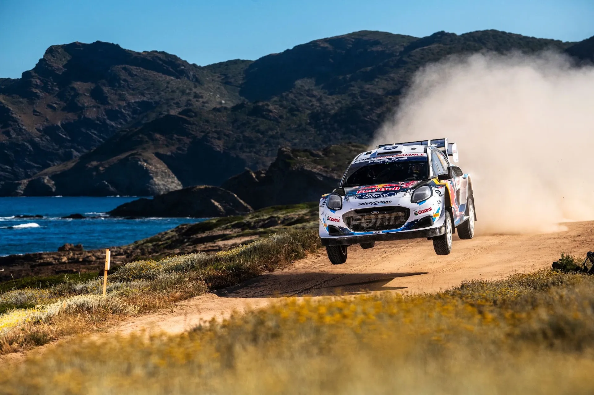
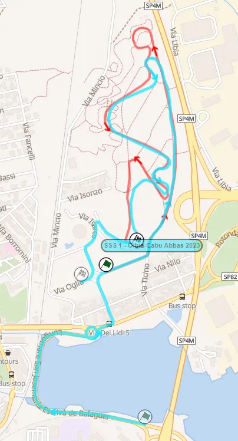
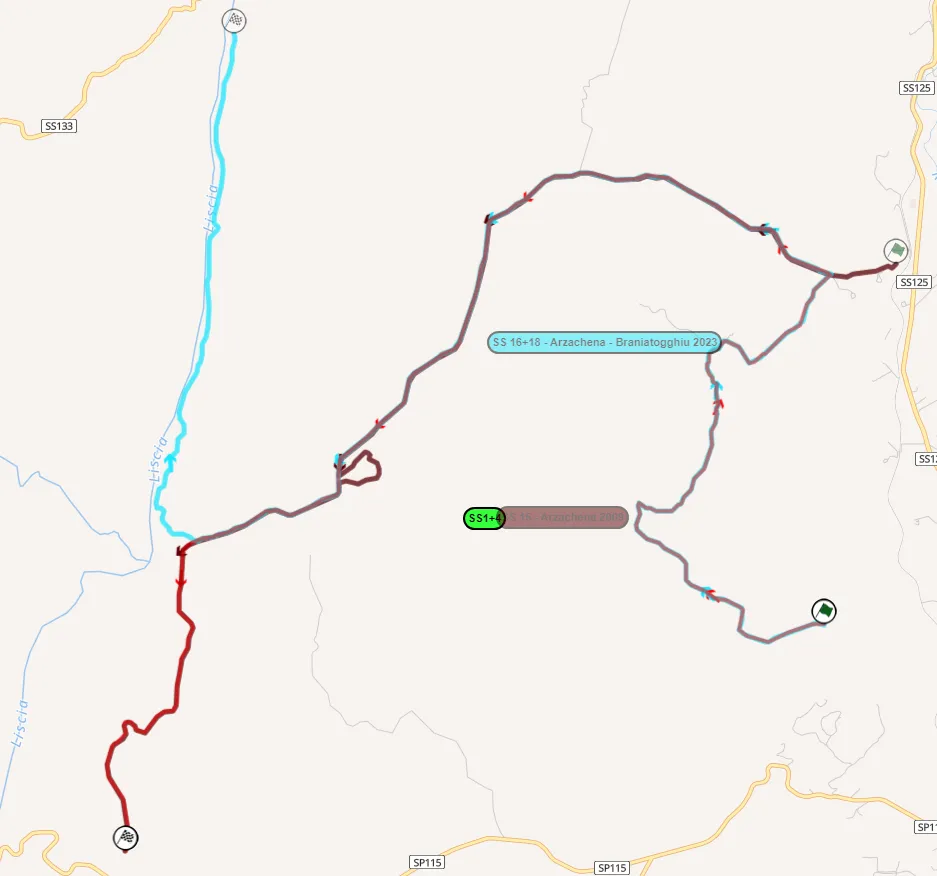
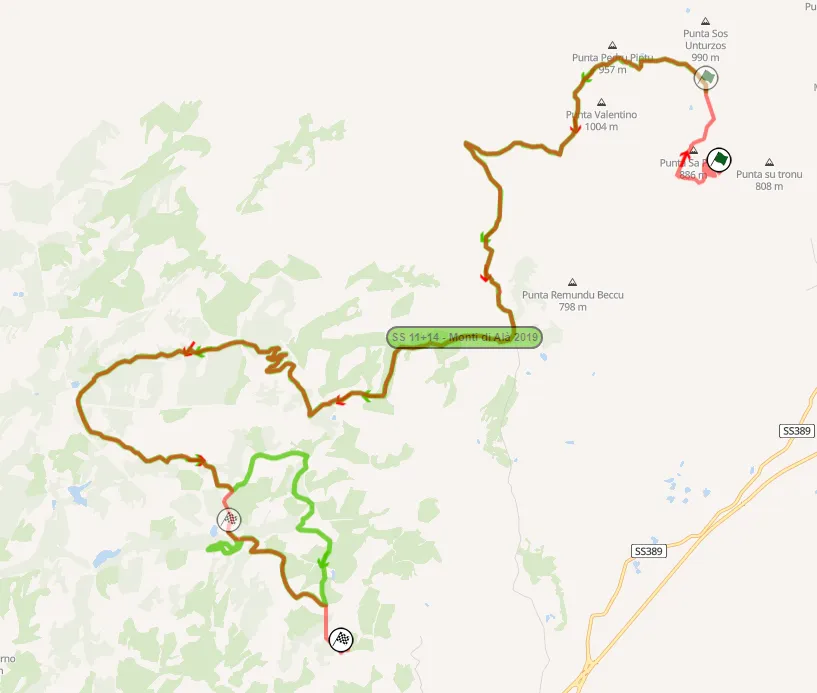
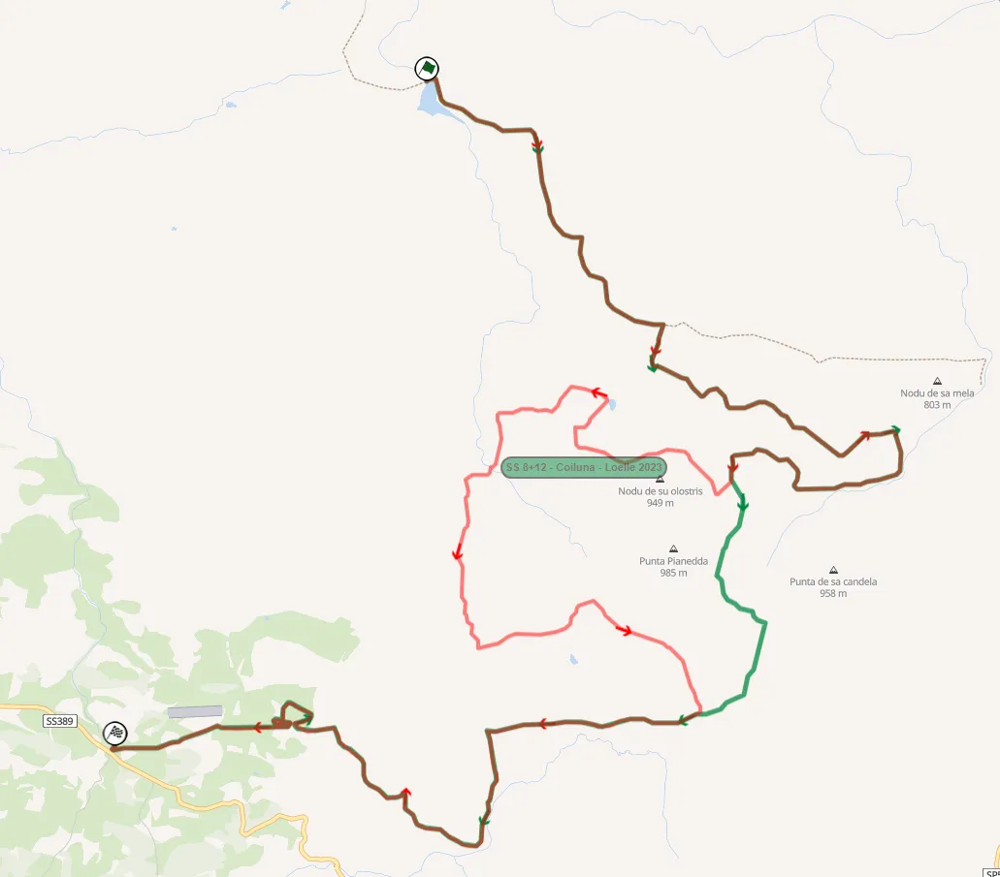
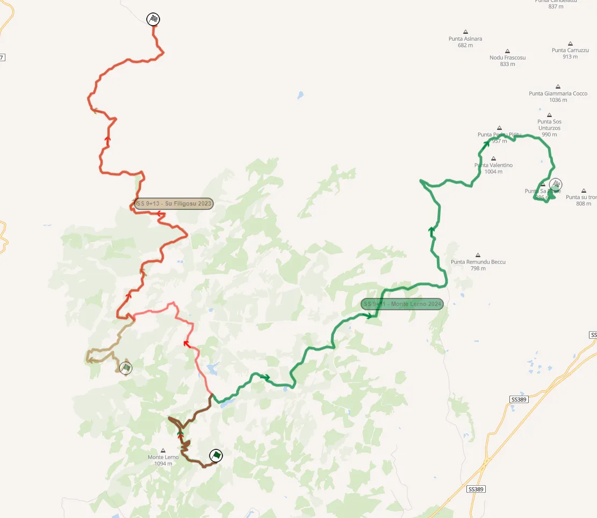
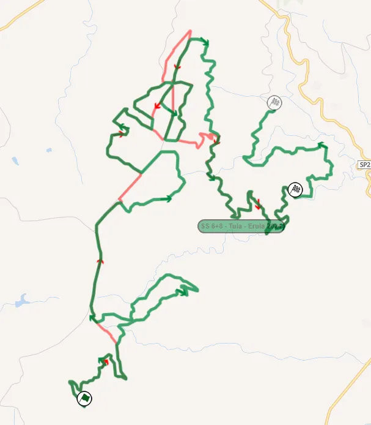
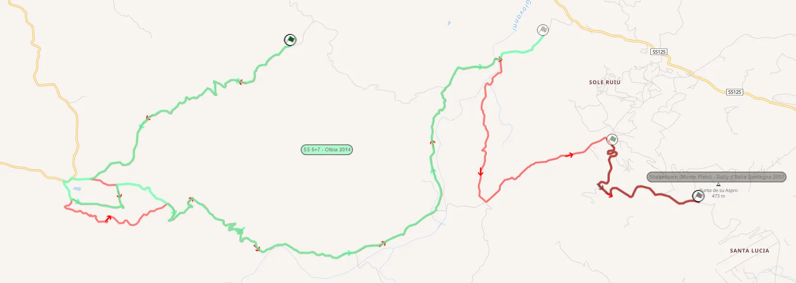
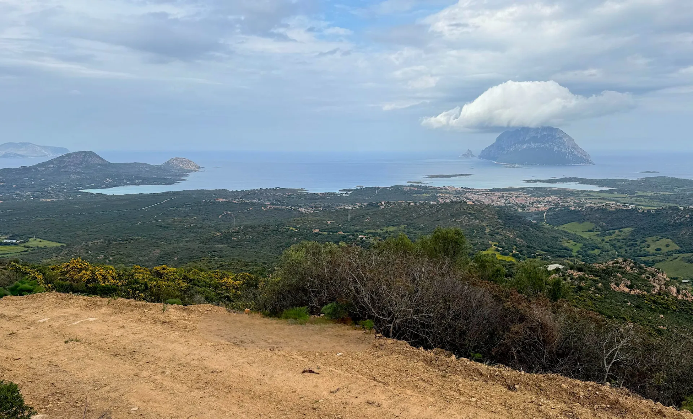

Rally Italia Sardegna 2025 - Route Preview
Cover and thumbnail: Jaanus Ree / Red Bull Content Pool
Maps: Rally-Maps.com
Rally Italia Sardegna returns to Olbia and also to a conventional itinerary format, ditching the "sprint" version of the rally which was used last year. With the switch in base, the rally features some modified stages from 2023 and 2024, as well as 2 completely new ones never used before in the WRC.
Thursday
Thursday is a short day, as it only features a pass through the pre-event Shakedown.
Shakedown: Olbia Cabu Abbas - 2.19km
Changes compared to 2024: New Shakedown compared to last year (thank god). It’s mostly the gravel part of the SSS with the same name that was used in 2023 and 2022.

Map of the stage (red) compared to the 2023 SSS (light blue)
Stage Description: The Shakedown is located in the city of Olbia, near the rally’s service park. It’s not really representative of the rally, as it’s quite “Mickey Mouse”. The stage itself is full of jumps, and also has many long, slow corners, using paths inside this park of sorts, where it’s situated.
Friday
Friday features 2 loops of 3 repeated stages. Arzachena is now the rally's opener, with the stage being used on Sunday in 2023 and 2021, Telti is a brand new stage, and Sa Conchedda, the day's longest, uses roads that have been used in the Monte Lerno stage in the past.
SS1/4 - Arzachena - 13.97km
Changes compared to 2024: Combination of the 2023/21 and 2009 Arzachena stages. The start is extended by 900m, and hasn't been used in a rally before.

The 2025 Arzachena stage (red) compared to the 2023 one (light blue) and the 2009 one (dark red)
Stage Description: The start of the stage is on a road that is smooth, with fast sections connected with junctions, with a jump also, at 2.16km. Shortly after the stage turns onto a narrower road, remaining fast until it becomes slow and technical 4 kilometers in.
The stage then turns to tarmac for the next 2.5 kilometers, with the road being initially broken, with two consecutive crests, before becoming smoother after a junction at 5.8km. Said tarmac road becomes gravel at 7km, and is very fast, with flat out sections and also 2 jumps at 9.1 and 9.7km.
The tarmac junction at 5.8km
At 12.11km the stage turns away from the 2023 route. It continues to be fast, again quite smooth, with a small technical section just before the finish. In 2023 and 2021 this was the fastest stage of the event, something that I expect it will also be this year.
Onboard of the section last used in 2009 (from 4:04 onwards)
SS2/5 - Telti - Calangianus - Berchidda - 18.43km
Changes compared to 2024: Brand new stage, never used before in the WRC. Parts of this stage have been used in local rallies like Rally dei Nuraghi e del Vermentino, and in Costa Smeralda back in the 80s.
Stage Description: The first 2.62km of the stage is on a narrow road, with a tricky series of hairpins just after the first 1000 meters. A brief tarmac section follows, after which the stage continues straight onto a very narrow but fast road with stone walls and fences on either side, passing next to crop fields for the most part.
It leaves this road at 6km, with a small tarmac section following, with the stage joining a very narrow gravel road at 6.7km.
It’s technical at first, including a pass through a narrow bridge at 8.53km, but it becomes faster from 9.7km onwards.
After that, another tarmac section follows from 12.41 to 12.88km, after which the stage joins another narrow gravel road. The last part of the stage is really narrow and bumpy, with trees running alongside the route.
Onboard of the really narrow section from a local rally. It will be in reverse for the WRC event. (from 2:25)
SS3/6 - Sa Conchedda - 27.95km
Changes compared to 2024: The first 12 kilometers are from last year’s Monte Lerno, only in reverse. Some of the new parts for this year were also used in the Monti di Ala stage back in 2019. That was the year when the Super Rallying Sebastien Ogier damaged his suspension and lost 27 minutes on that stage.

The Sa Conchedda stage compared to the 2019 Monti di Ala stage (light green)
Stage Description: The first couple of kilometers are quite Mickey Mouse, with the road being full of hairpins and “loops” on an even surface. After that, the proper part of the stage begins, with a very fast section amongst the wind turbines on a narrow road.
At 4.45km the stage becomes more technical, with many medium speed corners. At 6.15km there’s a tight junction after which the stage turns downhill, with a fast section following. At 10km, the stage leaves the wind turbine farm, and becomes slower and technical, on a less well maintained surface.
After a short narrow tarmac section, the stage joins a narrow but fast and bumpy road, leaving it via a tight hairpin at 15.2km. A series of hairpins and another short technical section at 16 and 18.6km later, and the stage is again fast and narrow for the next 3 kilometers.
The end of the stage is quite technical and rough, with a mix of fast and slow sections. Teemu Suninen went off the road here in 2021.
Suninen's crash from 2021, when the stage was the rally's opener
Saturday
Saturday again features 2 loops of 3 repeated stages. All three of the day's stages are commonly used on Day 2 of Rally Sardegna, and this year is no different.
SS7/10 - Coiluna - Loelle - 21.18km
Changes compared to 2024: Uses a route similar to the ones used in the past. Compared to the one used in 2023, it uses a detour 7.5km from the start onto a different road, and it rejoins the 2023 route at 6.55km from the finish.

This year's stage compared to the one from 2023 (green)
Stage Description: The start of the stage is mostly fast, with two jumps at 1.1 and 2.8km. Shortly after, it becomes slower and technical and also rougher and bumpier, as it goes through a road in a forest. After a short fast section at 5.8km, a very technical one follows, with the stage deviating from the 2024 route.
The next 3 kilometers are on a narrow but fast road, which is quite rough and rocky, and hasn’t been used since 2015. It becomes smoother after a junction at 11km, and also technical shortly after. Another fast and narrow section follows, never used in this direction before, with a small jump at 13.66km. The stage then joins the route of the 2024 stage again at 14.6km, and becomes very fast, with a flat-out section on a wider and smoother road. It again becomes narrow and technical for the next 2km, after which it passes through the “Loelle Arena”, a motocross track, which includes a man-made jump and a watersplash.
The stage reaches the finish after another short, fast section.
SS8/11 - Lerno - Su Filigosu - 24.34km
Changes compared to 2024: Essentially a combination of last year’s Monte Lerno stage and Su Filigosu from 2023. The first 4.6km includes the famous Micky’s Jump and were used last year. The stage then continues on, on a section last used in 2022, with the last 15km being the same as the stage from 2023.

Lerno - Su Filigosu compared to Monte Lerno from last year (green) and Su Filigosu from 2023 (brown)
Stage Description: The start is on a smooth medium-wide and technical road, with the famous Micky’s Jump 500m from the start. Just after the jump, the stage becomes narrower briefly, with a junction through a gate at 1.1km.
After a faster section, the stage leaves the route of the 2024 stage at 4.6km, with a very fast, almost flat out 2 kilometers following. After that, it becomes more technical and slow, and joins the route of the 2023 Su Filigosu stage.
The stage is mostly fast with long and flowing corners next, with a pass through a narrower gate at 14.25km, leading the cars to a very narrow and technical tarmac section with a broken surface. The road returns to gravel shortly after, remaining technical, twisty and rough initially, before becoming faster and wider again. After a short, narrow and twisty section at 19 km, including a couple of crests at about 20 km, the stage joins a new road with a different surface, which is still narrow and technical. The finish of the stage is after a big water splash, which gave issues to all of the Toyotas back in 2023.
SS9/12 - Tula-Erula - 15.28km
Changes compared to 2024: Uses roads that have been used in the Erula - Tula stage. Compared to the one used last year, it uses a similar route, with some sections that deviated from the “main road” being cut off, and the finish of the stage being earlier. Thierry Neuville went off the road here in 2024, as did Sebastien Ogier in 2023 from the lead of the rally. In the past, this has been the slowest stage of the rally.

This year's stage compared to the one from last year (green)
Stage Description: It’s a very slow start to the stage, on a rough, narrow and sinuous road, but it becomes faster after that, with a fast section with crests next to wind turbines.
After a chicane of sorts at 4km, the stage joins the tarmac road that it ran parallel to momentarily, with a very rough and narrow section following. Some of the parts here are almost like Safari!
Edit: The stage does not go on the tarmac road, it continues parallel to it, on a rough path.
At 8.3km there’s a new section, which passes through a firebreak, and is very fast, with a crest at 8.52km. It again becomes slow, narrow and rough at 9.8km, a character which it maintains until the end. The end of the stage is exceptionally slow and twisty.
Sunday
Sunday is the shortest day of the rally, featuring two runs of two repeated stages. At 77.94km, it's still solid mileage for the last day of the rally. Both of the day's stages are essentially new, with the Power Stage being completely new for this year.
SS13/15 - San Giacomo - Plebi - 25.19km

This year's stage compared to the Olbia (light green) which was used in Costa Smeralda, and the 2007 Shakedown (brown)
Changes compared to 2024: Essentially a new stage, parts of which were last used in the rally back in 2013. Some of the newer sections were used in local rallies, as well as the Costa Smeralda Rally. The finish of the stage is an older shakedown of the event, last used in 2008. In recent years it has been used by Rally2 crews for their pre-event test.
Onboard that covers most of the first 17km of the stage
Stage Description: Starting on tarmac, the surface soon becomes gravel, and is quite technical and medium speed, becoming faster from 3km onwards. After a very fast section from 5.2 to 6.2km, the stage goes downhill, into a very slow and sinuous section, on a narrow road. This includes a series of downhill hairpins at 10.2km.
Following that, it becomes slightly faster, with the surface being bumpy, and the road having a few crests. Another technical section follows at 16km, lasting approximately for the next 4km. A very fast 1000 meters leads the stage to the route of the 2007 Shakedown. The last few kilometers of the special is again slow and technical, with another series of hairpins just before the finish.
Onboard of the last 2.5km of the stage
SS14/16 Porto San Paolo - 13.78km
Changes compared to 2024: Brand new stage, never used before in this rally.

View from the end of the Power Stage
Rally Italia Sardegna Organisers
Stage Description: The start is on a medium-fast and narrow road. At 2.5km, the stage follows a road on a private property, becoming narrower, slower and more technical. That road is on a steep uphill incline until about the 5 kilometer mark, after which it enters a forested area and goes downhill, with the surface becoming sandier.
The stage passes by the village of Tiriddo, and then it becomes twisty and sinuous, with a series of downhill hairpins. At 11.5km it takes a detour and passes through some hiking trails before rejoining the road shortly after.
The end of the stage is on a fast and wide road with crests and jumps, with the finish being in Porto San Paolo, overlooking the Tavolara island.


Comments